English
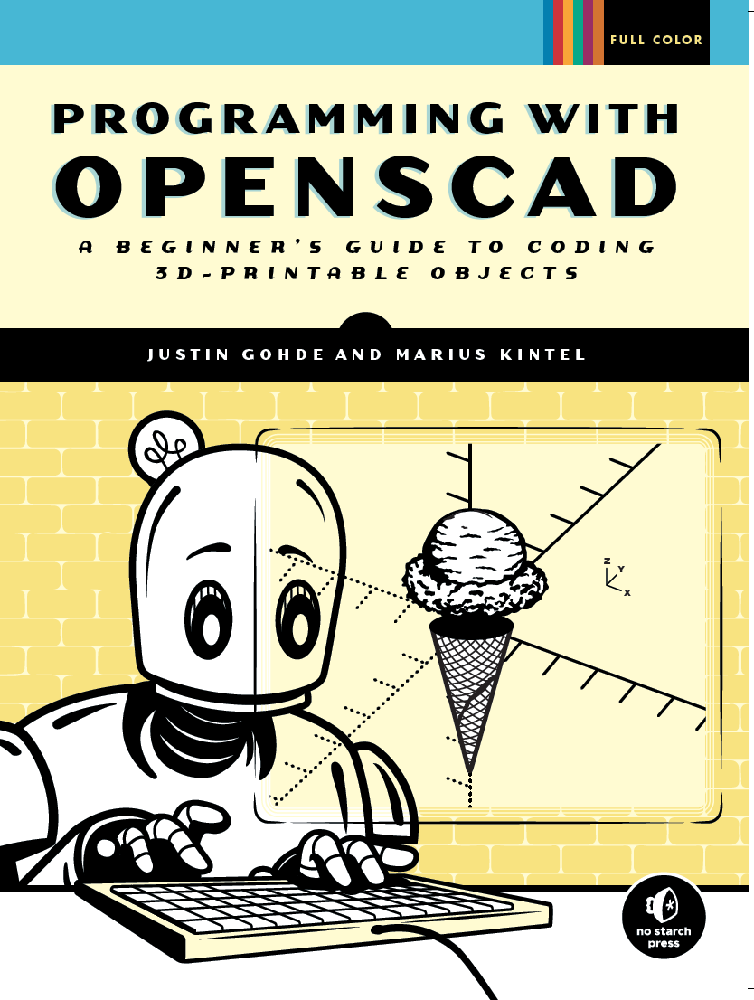
Programming with OpenSCAD - A Beginner's Guide to Coding 3D-Printable Objects
This book channels OpenSCAD’s visual benefits and user-friendliness into a STEAM-focused, project-based tutorial that teaches the basics of coding, 3D printing, and computational thinking while you develop your spatial reasoning by creating 3D designs with OpenSCAD.
Accessibly written for a wide audience (advanced middle schoolers, high school students, college students, artists, makers and lifelong-learners alike), this is the perfect guide to becoming proficient at programming in general and 3D modeling in particular.
Read more at programmingwithopenscad.github.io
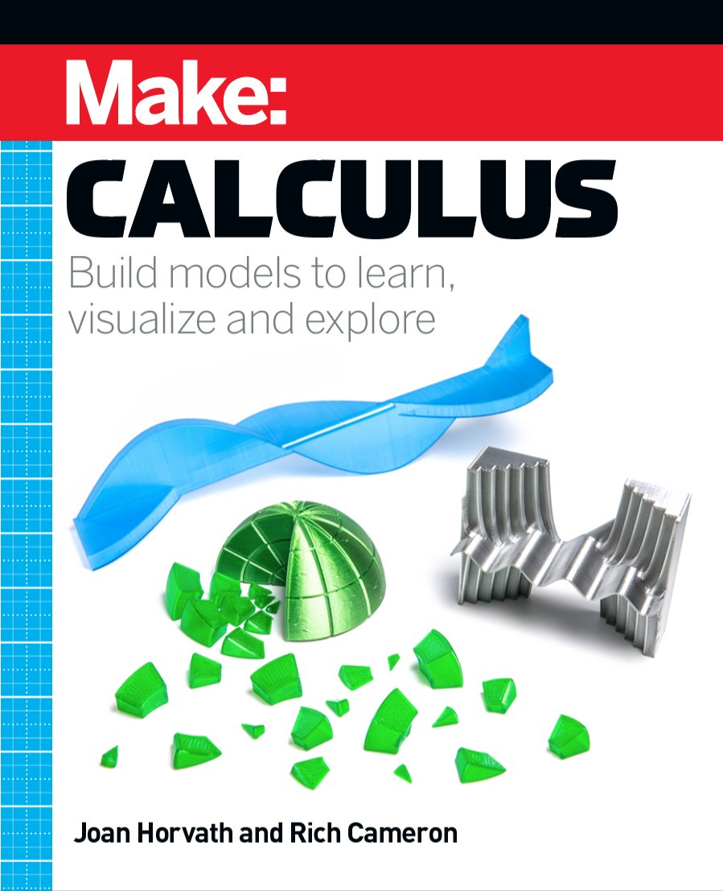
Make: Calculus
This book is not a traditional Calculus I textbook! Make: Calculus imagines how Isaac Newton might have used 3D printed models, construction toys, programming, craft materials, and an Arduino or two to teach calculus concepts in an intuitive way.
Github Repository: whosawhatsis/Calculus
Buy from Make: Print
Order from Amazon
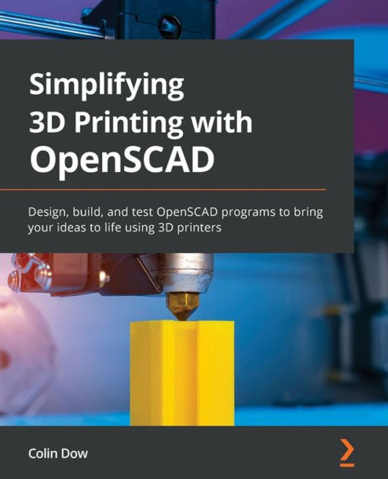
Simplifying 3D Printing with OpenSCAD
OpenSCAD is an open-source 3D design platform that helps you bring your designs to life. This book will show you how to make the best use of OpenSCAD to design and build objects using 3D printers.
This OpenSCAD book starts by taking you through the 3D printing technology, the software used for designing your objects, and an analysis of the G-code produced by the 3D printer slicer software. Complete with step-by-step explanations of essential concepts and real-world examples such as designing and printing a 3D name badge, model rocket, and laptop stand, the book helps you learn about 3D printers and how to set up a printing job. You'll design your objects using the OpenSCAD program that provides a robust and free 3D compiler at your fingertips. As you set up a 3D printer for a print job, you'll gain a solid understanding of how to configure the parameters to build well-defined designs.
By the end of this 3D printing book, you'll be ready to start designing and printing your own 3D printed products using OpenSCAD.
Github Repository: PacktPublishing/Simplifying-3D-Printing-with-OpenSCAD
Addenum Video: How to make a Screwdriver Bracket using OpenSCAD
Buy/Access via Packt Subscription: Book page at Packt
Order from Amazon
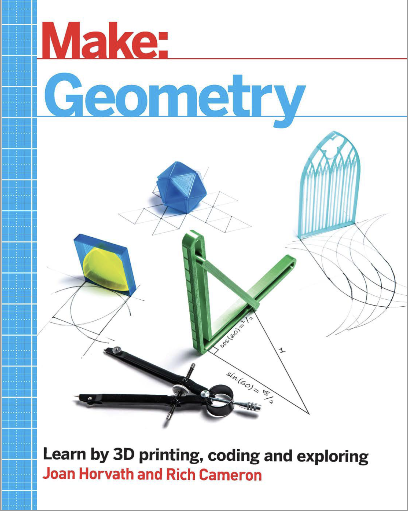
Make: Geometry
Geometry, of all the branches of mathematics, is the one that is most easily visualized by making something. However, it is all too easy to reduce it to reams of formulas to memorize and proofs to replicate. A lot of the basics of geometry are a few thousand years old, and mostly solve practical problems.
In Make: Geometry, we use OpenSCAD 3D printable models and other hands-on techniques to get at both the practicality of geometry, without losing the puzzle-solving and the aesthetics that also make it joyful to learn.
Github Repository: whosawhatsis/Geometry
Order from Amazon
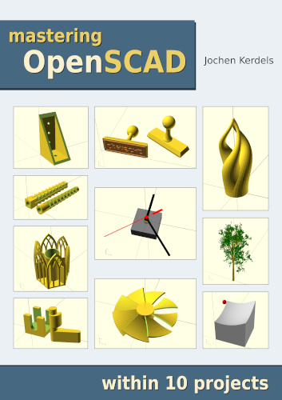
Mastering OpenSCAD within 10 projects
OpenSCAD is a free open source software for the creation of three-dimensional geometries. In contrast to common CAD systems such as Fusion 360 or SolidWorks, geometries in OpenSCAD are defined by a purely textual description. This means that all elements of a geometry are inherently parameterized and can be easily adapted. This high flexibility makes OpenSCAD particularly suitable for the design of technical systems and and their components, for example in the context of 3D printing.
The book Mastering OpenSCAD introduces you to all the important concepts and functionalities of OpenSCAD. The book guides you through 10 selected projects step by step, each project focusing on a limited set of functions and concepts. After these 10 projects, you will know all the practically relevant features of OpenSCAD. For the sake of completeness, a final chapter briefly presents the functions that were not addressed in any of the projects.
Read online: https://mastering-openscad.eu/
Support the author: Bank transfer / Paypal
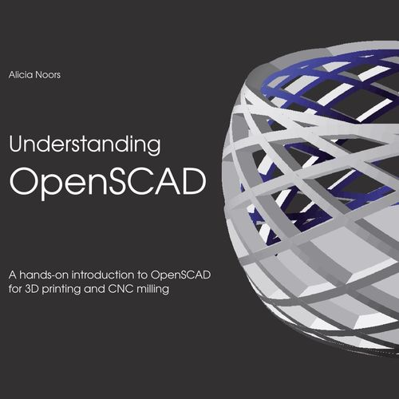
Understanding OpenSCAD
OpenSCAD is not like other CAD solutions and that is exactly what makes it so flexible and easy to learn.
With this book, you will learn how easy it is to develop your own models from scratch in OpenSCAD and then export them for 3D printing or other manufacturing processes. Besides, I'll show you how you can import and process 2D and 3D models from other CAD programs...
I will also show you how I approach a design and why I choose a solution for a specific situation. This gives you a practical insight into working with OpenSCAD!
Order from Books on Demand
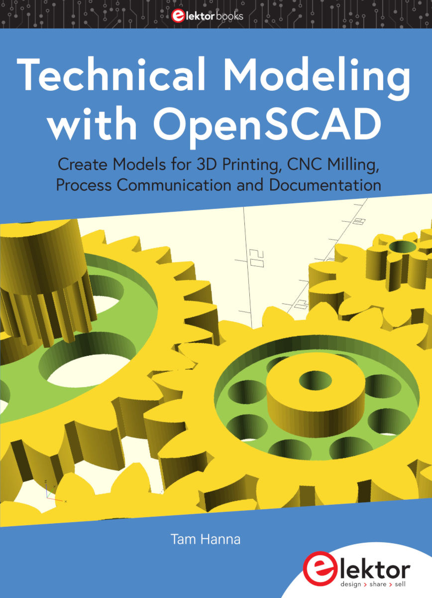
Technical Modelling with OpenSCAD
Watch the video review by the Autor on YouTube
Buy directly from the Author: Book / PDF
Order from Amazon
Creating 3D Models for 3D Printing Using OpenSCAD
In this book, I take you through the process of creating 3D models with OpenSCAD in a step by step manner that I think you will find easy to follow. I will concentrate on the aspects that I find most useful for generating 3D models suitable for 3D printing. I will not get into aspects of OpenSCAD designed to make pictures or 3D movies, such as coloring objects or animation, unless they have some use as a modeling design tool.
I end the book with a series of chapters called the project section that describe how to make a variety of actual objects that you can use. These give you examples of how to put together the techniques I have discussed in the earlier chapters, and also provide useful components like connectors and moving parts that you can incorporate in your own projects.
Order from Amazon
OpenSCAD Basics Tutorial
OpenSCAD is a widely used open-source CAD modeler. This book is an introduction to the OpenSCAD. This fast-paced book helps you to create models easily using basic shapes, transformations, and Boolean operations.
As you work through the book, you will learn how to:
- Get started with modeling using OpenSCAD
- Use 2D and 3D shapes to create models
- Use hull and minkowski functions to create complex shapes
- Create patterns
- Author: Kishore Topu
- Publisher: Tutorial Books
- Date: August 2020
- ISBN: 978-1-39-398880-9
Order from Amazon
OpenSCAD Cookbook
Order from Amazon
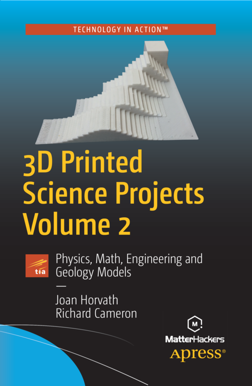
3D Printed Science Projects Volume 2 - Physics, Math, Engineering and Geology Models
This book uses OpenSCAD models to visualize science principles in topics somewhat more advanced than the ones in the first volume, including models of geological strata, snowflakes, probability, moment of inertia, the doppler shift, and more. The models are designed in most cases to be altered by the reader to experiment and improve their understanding of the science topics.
The associated repository of models has moved since the book was published, and can now be found at https://github.com/Apress/3d-printed-science-projects-ii.
Github Repository: Apress/3d-printed-science-projects-ii
Publisher's page: Springer Link
Order from Amazon
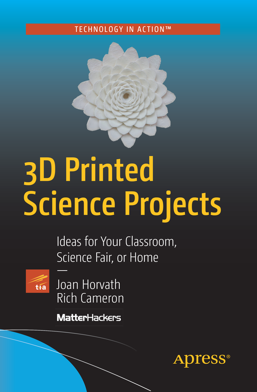
3D Printed Science Projects - Ideas for your Classroom, Science Fair or Home
This book uses OpenSCAD models to visualize science principles behind simple machines, plant growth, orbits of planets, waves, molecules, trusses and more. The models are designed in most cases to be altered by the reader to experiment and improve their understanding of the science topics.
The associated repository of models has moved since the book was published, and can now be found at https://github.com/whosawhatsis/3DP-Science-Projects/.
Github Repository: whosawhatsis/3DP-Science-Projects
Publisher's page: Springer Link
Order from Amazon
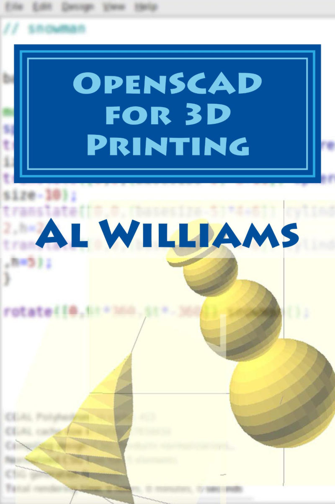
OpenSCAD for 3D Printing
Order from Amazon
German / Deutsch
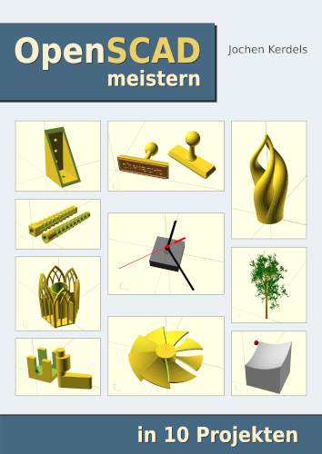
OpenSCAD meistern in 10 Projekten
OpenSCAD ist eine freie und quelloffene Software für die Erstellung dreidimensionaler Geometrien. Im Gegensatz zu geläufigen CAD-Systemen wie etwa Fusion 360 oder SolidWorks werden Geometrien in OpenSCAD durch eine rein textuelle Beschreibung definiert. Hierdurch sind sämtliche Elemente einer Geometrie inhärent parametrisiert und können auf einfache Weise angepasst werden. Diese hohe Flexibilität macht OpenSCAD daher besonders geeignet für die Konstruktion technischer Systeme und Komponenten, etwa im Kontext des 3D-Drucks.
Das Buch OpenSCAD meistern führt Sie zunächst in alle wichtigen Konzepte und Funktionsweisen von OpenSCAD ein. Anschließend begleitet Sie das Buch Schritt für Schritt durch 10 ausgewählte Projekte, die sich jeweils auf eine begrenzte Menge an Funktionen und Konzepten konzentrieren. Nach diesen 10 Projekten werden Sie alle praktisch relevanten Funktionen von OpenSCAD kennen. Der Vollständigkeit halber stellt ein abschließendes Kapitel noch die Funktionen kurz und knapp vor, die in keinem der Projekte angesprochen wurden.
Online lesen: https://openscad-meistern.de/
Den Autor unterstützen per Überweisung / Paypal
Bestellen bei Books on Demand
Bestellen bei Amazon
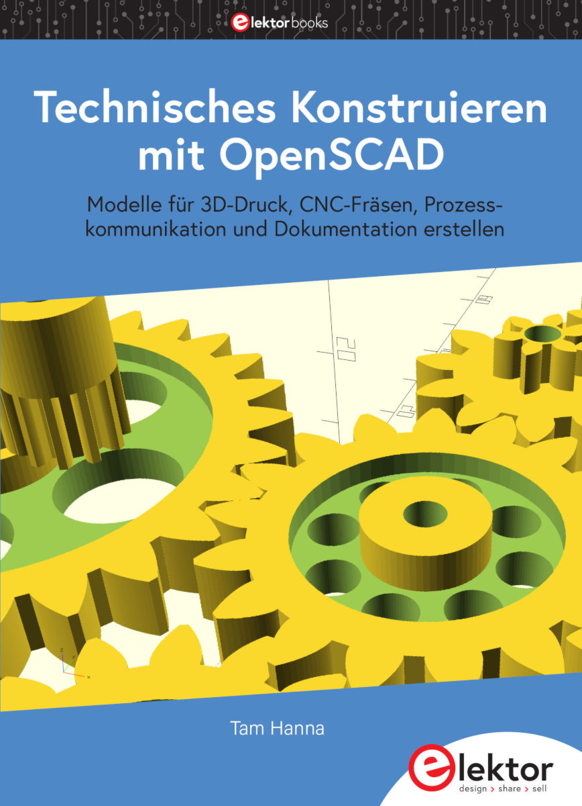
Technisches Konstruieren mit OpenSCAD
Der Autor präsentiert das Buch bei YouTube (auf Englisch)
Direkt vom Autor kaufen: Buch / PDF
Bestellen bei Amazon
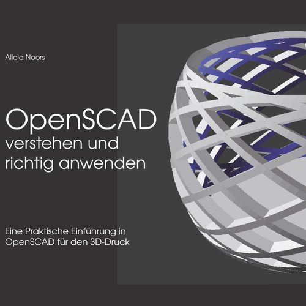
OpenSCAD verstehen und richtig anwenden
OpenSCAD ist nicht wie andere CAD-Lösungen und genau das macht es so flexibel und leicht zu erlernen.
Mit diesem Buch lernen Sie, wie einfach es ist, in OpenSCAD eigene Modelle von Grund auf zu erstellen und diese dann für den 3D-Druck oder andere Herstellungsverfahren zu exportieren. Darüber hinaus zeige ich Ihnen, wie Sie mit anderen CAD-Lösungen zusammenarbeiten können und fertige 2D- und 3D-Modelle importieren und weiterverarbeiten...
Außerdem zeige ich Ihnen, wie ich an ein Design herangehe, und warum ich einen bestimmten Lösungsansatz für eine bestimmte Situation wähle. So erhalten Sie einen praxisnahen Einblick in die Arbeit mit OpenSCAD!
Bestellen bei Books on Demand
Bestellen bei Amazon
Spanish / Español

Un reloj de Sol digital
El presente librito, o manual, es el resultado de unas lecciones escritas para un curso dictado durante el año 2021; de ahí el carácter, quizás un tanto pretencioso, de 2da edición con que quise distinguirlo.
Dichas lecciones, a su vez, reconocen una doble inspiración. La primera de ellas llegó de la mano de uno de mis colegas docentes, quien un día inolvidable llamó mi atención sobre el mágico objeto protagonista de estas páginas, perfectamente desconocido por mí hasta ese momento: el Reloj de Sol digital. Tras varios días dedicados a regocijarme considerando su sabia y delicada maravilla, sentí la necesidad de aplicarme a entender cómo reproducirlo: en otras palabras, a entenderlo cabalmente. Para ello tuve primero que descubrir un lenguaje de programación que me permitiera pensar y expresar la construcción del reloj de Sol digital; afortunadamente lo hallé en OpenSCAD, el cual aprendí a chapucear primero, y a ejercer luego con mayor solvencia, mientras resolvía el reloj.
Espero, querido e improbable lector, que sus páginas te revelen -al menos en parte- la dicha de pensar y escribir en este maravilloso, dúctil y expresivo lenguaje.
- Autor: Luis Gabriel López Soler
- Fecha: Julio 2022
- Esta obra está bajo una Licencia Creative Commons Atribución-CompartirIgual 4.0 Internacional.
Edición para imprimir: reloj-de-sol-libro.pdf
Edición para pantallas: reloj-de-sol-pantalla.pdf
Repositorio GitHub: lopezsolerluis/reloj-de-sol-libro